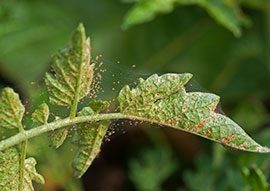
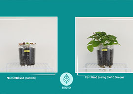
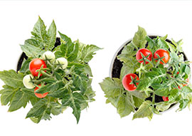
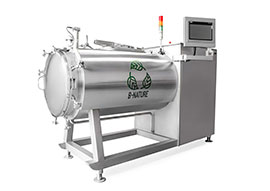
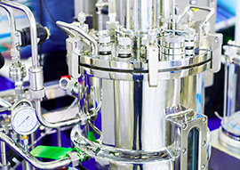
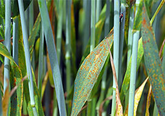
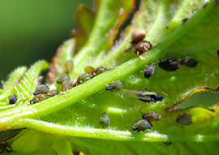

Bio10-Protect Pest Insect Management In modern agriculture, the need for sustainable and effective pest management solutions has... Learn More
 BIO10-KANE Pest Insect Management In modern agriculture, the need for sustainable and effective pest management solutions has... Learn More
Bio10 Blanca Disease Management The Bio10-Blanca project addresses the growing need for sustainable plant disease management solutions... Learn More
 BIO10-GREEN NATURAL FERTILISING SOLUTIONS The need for natural and effective fertilizers has become increasingly significant in sustainable agriculture ... Learn More
 BIO10-FRUIT & FLOWER Natural plant enhancers In response to the increasing need for sustainable and environmentally friendly agricultural practices ... Learn More
 B-NATURE Advanced PLC-Controlled Rapid Organic Composter The development of efficient composting technologies is a critical aspect of modern waste management and ... Learn More
 500L PILOT BIOPROCESS REACTOR Advancing Bioprocessing with Scalable Pilot Reactors The 500L Pilot Bioprocess Reactor is an ongoing project that aims to advance scalable bioprocessing technology ... Learn More
 DISEASE MANAGEMENT Innovative Solutions for Disease Protection Aims to revolutionize plant disease protection through natural, sustainable methods ... Learn More
 PEST INSECT MANAGEMENT ADVANCED SUSTAINABLE AND NATURAL INSECT PROTECTION The project is dedicated to developing innovative pest management solutions that are both effective and ... Learn More
NATURAL NANO BIOPOLYMERS Innovative Biopolymer Development Using Organic Waste Streams, The Nano Biopolymer Project is focused on the development of cutting-edge natural ... Learn More